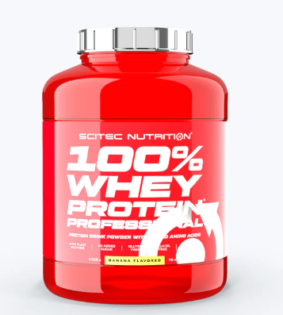

Proteína Whey
100% WHEY PROFESSIONAL 1. Ideal para la recuperación muscular y el aumento de masa.
Precio: $20.00
100% WHEY PROFESSIONAL 1. Ideal para la recuperación muscular y el aumento de masa.
Precio: $20.00

Descripción del producto 2. Perfecta para tomar antes de dormir y evitar el catabolismo nocturno.
Precio: $25.00